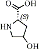
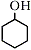
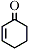

HTML by Rhodium
In the presence of a catalytic amount of 2-cyclohexen-1-one, decarboxylation of α-amino acids proceeds smoothly and affords the corresponding amino compounds in good yields. Optically active amino compounds, (3R)-(-)-3-hydroxypyrrolidine and (2R)-(-)-2-hydroxypropylamine are obtained in 93% and 80% yields, respectively.
Decarboxylation of α-amino acids is one of the effective methods for obtaining a number of important amino compounds which are versatile substances in the synthesis of biologically active compounds. However it is difficult to carry out decarboxylation under mild conditions except in the case of such compounds having an electron withdrawing group at the α-position.1
In general, decarboxylation of α-amino acids proceeds under conditions such as in the presence of peroxide2 or ketone3 catalyst in high boiling point solvent, irradiation with UV light,4 heating in diphenylmethane solvent,5 and through usage of bacteria.6,7
In spite of the effectiveness of peroxide compounds as catalysts, their applications in large scale synthesis are not desirable because of instability and associated difficulties in handling.
We wish to report a new and facile method for the decarboxylation of α-amino acids applicable to the commercial production of amines through use of 2-cyclohexen-1-one as a catalyst, which is both readily available and easy to handle.
At first, we attempted the decarboxylation according to the peroxide method using cyclohexanol as the solvent. However, it was difficult to establish a general method because both the reaction time and amount of catalyst required varied to complete the decarboxylation even under the same scale reaction. For instance, when 4-hydroxy-L-proline was treated with peroxide catalyst (tert-butyl peroxide or tetralin hydroperoxide) in cyclohexanol under reflux, the peroxide consumed ranged between 3% and 10% and decarboxylation took between 7 h and 28 h to complete. This variation was found to greatly depend on the quality of the cyclohexanol used. Strangely, the decarboxylation rate gradually decreased in proportion to increase in the purity of the cyclohexanol. For example, in the case of 99.3% purity cyclohexanol, it took 28 h reaction time and the addition of 10% peroxide. However, with 98.1% purity cyclohexanol, the reaction was completed in 7 h by the addition of only 3% peroxide. These results suggest that there was some effective substance contained in the cyclohexanol. The most effective way to determine this substance was by the use of its UV spectrum. cyclohexanol of 99% purity has no peak between 200 to 320 nm, but 98% purity cyclohexanol showed a strong peak at 225 nm. Only 2-cyclohexen-1-one has a peak at 225 nm within some impurities contained in cyclohexanol. Quantitative analysis by gas chromatography showed that it makes up less than 0.1% in 99% purity cyclohexanol but more than 0.3% in 98% purity cyclohexanol.
Table 1.
Decarboxylation of 4-Hydroxy-L-Proline by
the Use of (t-BuO)2 and 2-cyclohexen-1-one
Entry |
 |
g |
Catalyst |
Rxn Timec |
Yieldd |
||
a |
(t-BuO)2b |
||||||
1 | 10 g | 100 ml |
-e | 3% | 7 h | 7.01 g | 73.4% |
2 | 10 g | 100 ml |
-f | 10% | 28 h | 6.38 g | 67.0% |
3 | 10 g | 100 ml | 0.5% | 1.5% | 2 h | 7.96 g | 84.5% |
4 | 10 g | 100 ml | 0.5% | 0.5% | 2 h | 8.14 g | 86.4% |
5 | 10 g | 100 ml | 1.0% | - | 2 h | 7.64 g | 81.1% |
6 | 10 g | 50 ml | 1.0% | - | 3 h | 8.60 g | 91.3% |
The effectiveness of 2-cyclohexen-1-one8 as a catalyst is shown in the following data (Table 1) using 4-hydroxy-L-proline as a model compound together with tert-butyl peroxide.9
As described above, the use of t-butyl peroxide as a catalyst was not given satisfactory results (Entries 1-2). However, addition of a small amount of 2-cyclohexen-1-one up to 0.5% v/v to cyclohexanol resulted in a marked improvement in both reaction time and yield in spite of a decrease in quantity of tert-butyl peroxide to 0.5-1.5% (Entries 3-4). These results suggested that only addition of 2-cyclohexen-1-one, without tert-butyl peroxide, would be sufficient for decarboxylation; this being confirmed by the satisfactory results obtained in entries 5-6.
Table 2.
Decarboxylation of α-Amino Acid11 by Use of 2-Cyclohexen-1-one
Entry |
Amino Acid |
Rxn Timea |
Yielde |
Product Amine | mpf (HCl Salt) |
|
7 | Phe | 1% | 50 min | 85.0% | α-Phenethylamine | 220�C |
8 | Val | 2% | 5 h | 84.4% | Isobutylamine | 160�C |
9 | Lys | 1% | 3 h | 87.8% | 1,5-Diaminopentane | 260-262�C |
10 | Met | 2% | 2 h | 72.8% |
3-Methylthio- propylamine | 143-144�C |
11 | Trp | 1% | 1.5 h | 92.3% | Tryptamine | 256�C |
12 | 4-OH- Pro | 1% | 2 h | 93.0% |
3R-(-)-3-Hydroxy- pyrrolidinec | 109�C |
13 | His | 1% | 26 h | 95.0% | Histamine | 244-247�C |
14 | Thr | 1% | 9 h | 80.0% |
2R-(-)-2-Hydroxy- propylamineb | 113�C |
On applying this convenient method to α-amino acids, the desired amino compounds were obtained in high yield, as shown in Table 2.
The reaction progress could easily be monitored by only checking the starting material to be dissolved. The solubility of the α-amino acid to cyclohexanol is an important factor affecting the rate of decarboxylation. For example, the decarboxylation usually completes within 5 h (Entries 7-12). However, in the case of L-histidine and L-threonine, these reactions require longer time (Entries 13-14).12 Further addition of 2-cyclohexen-1-one accelerates decarboxylation, but the isolated yield of the corresponding amine is decreased.
A higher temperature also accelerates decarboxylation; for example treatment of 4-hydroxy-L-proline with 2-cyclohexen-1-one (1% v/v) at 120�C can not complete decarboxylation within 24 h, whereas under refluxing conditions in cyclohexanol complete decarboxylation occurs within 2 h.
The α-amino group is necessary to this reaction, because both β-alanine13 and benzoic acid14 can not give the desired products under the same reaction conditions described above.
When 4-hydroxy-L-proline and L-threonine are treated with 2-cyclohexen-1-one, the corresponding (3R)-(-)-3-hydroxypyrrolidine and (2R)-(-)-2-hydroxypropylamine are obtained in 93% and 80% yields, respectively (Entries 12-14). These optically active amines are important compounds in the synthesis of biologically active products such as carbapenem derivatives.15